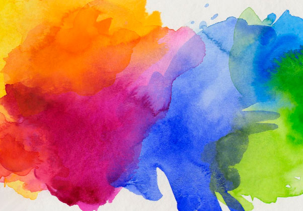
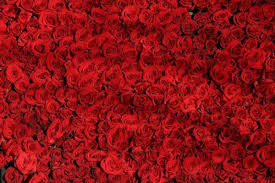
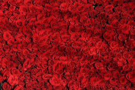

Psicología del color
Indice
Introducción
los colores que nos rodean no son sólo estéticos, también tienen un profundo impacto en cómo sentimos y
actuamos. Exploraremos cómo los distintos colores pueden inducir emociones específicas y cómo se aplica este
conocimiento en distintos campos. Sumérjase en el mundo de la psicología del color y descubra su poderoso efecto
en nuestras vidas.

¿Qué es la psicología del color?
La psicología del color es el estudio de cómo los colores afectan a nuestras emociones y comportamiento. Explica
cómo los colores pueden hacernos sentir de una determinada manera o influir en nuestras acciones. El objetivo es
utilizar los colores para producir emociones específicas o cambiar el comportamiento de las personas.

¿Para qué sirve la psicología del color?
Entendiendo cómo afectan los colores a las personas puede ayudarnos a predecir cómo responderán a las imágenes
visuales. Este conocimiento facilita la elección de colores para anuncios, logotipos o marcas. Por eso la
psicología del color se aplica principalmente en campos como el diseño, la arquitectura, la moda, la publicidad
y otros similares.

Circulo cromático
El uso del círculo cromático como herramienta esencial es muy común, porque ayuda a seleccionar colores que
funcionan bien juntos y crean armonía visual. Y tengo que mencionar que este círculo se divide en dos grupos
principales: colores cálidos y colores fríos.
Colores cálidos y fríos
Por un lado, los colores cálidos son como el sol y el fuego. Incluyen el amarillo, el rojo y sus tonalidades
afines. Estos colores atraen la atención, dan sensación de expansión y hacen que las cosas parezcan más grandes.
Son colores vibrantes y excitantes.
Por otro lado, los colores fríos son como el agua y el hielo. Entre ellos están el azul, el verde y el violeta.
Estos colores dan sensación de calma y profundidad; hacen que las cosas parezcan distantes y más pequeñas. Son
colores tranquilos y relajantes.
No obstante, es importante saber que un color puede parecer cálido o frío dependiendo de lo que lo componga. Si
un color frío, como el verde, se encuentra con una constitución en la que predomina el amarillo, parecerá
cálido. Por tanto, lo que lo compone influye en cómo vemos un color.
Significado de los colores
- Azul
- Tranquilidad
- Confiabilidad
- Relajación
- Profesionalismo
- Positividad
- Calma

- Rojo
- Fuerza
- Energía
- Intensidad
- Amor
- Alerta
- Peligro
 


- Amarillo
- Felicidad
- Energía
- Excitación
- Alegría
- Entusiasmo
- Inquietud
- Naranja
- Entusiasmo
- Diversión
- Creatividad
- Juventud
- Dinamismo
- Verde
- Naturalidad
- Serenidad
- Equilibrio
- Salud
- Frescura
- Morado
- Feminidad
- Elegancia
- Sensibilidad
- Rareza
- Sobriedad
- Frescura

- Negro
- Elegancia
- Formalidad
- Exclusividad
- Lujo
- Expetativa
- Estatus
- Seriedad
- Liderazgo
- Simplicidad
- Blanco
- Sencillez
- Bienestar
- Salud
- Higiene
- Practicidad
- Innovación
- Gris
- Calma
- Sobriedad
- Normalidad
- Tranquilidad
- Prudencia
- Estabilidad
- Cognición
- Marron
- Calidez
- Naturalidad
- Neutralidad
- Seriedad
- Antigüedad